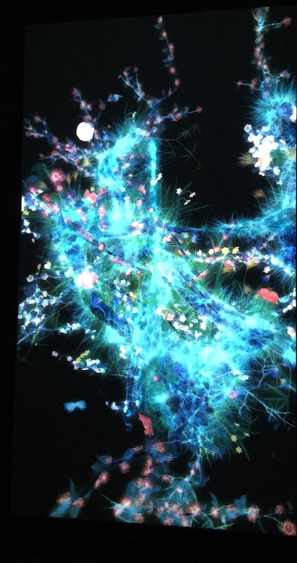

Floral Display
I think it would be really cool to have a projection of flowers, each one representing someone who has entered the exhibit. One of the biggest dividers of the human population is appearance. It affects race prejudices, makes people worry about how they look, contributes to eating disorders and body dysmorphia, and divides us as a whole. The irony is, in general, we all look similar. We are all humans with bodies and although we have different shapes and colors and sizes, we are all beautiful and unique. I feel like the thing that embodies this is flowers. They all look different and all have different colors and shapes and sizes and yet we all see them as beautiful. I would love for each person who enters the exhibition display to create a flower that they feel